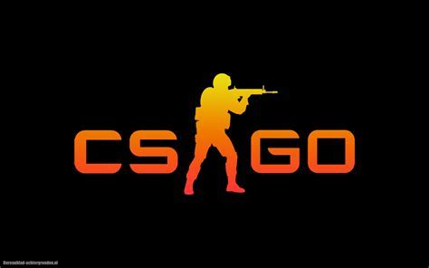
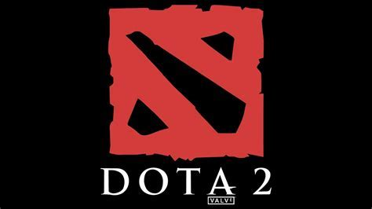

Jogos para PC
Counter-Strike: Global Offensive
Counter-Strike, também conhecido como CS, é uma série de jogos em FPS para PC. Os jogos de Counter Strike fizeram muito sucesso, como Counter Strike: Global Offensive (CS: GO) e Counter Strike Source.
Já o primeiro jogo contou com inúmeras atualizações, que sendo a versão 1.6 a última e mais famosa. Os últimos lançamentos contam com jogabilidade online. No game, cada jogador deve optar por fazer parte de uma das duas equipes: a dos terroristas e a dos contraterroristas.
O consagrado jogo é destacado por ser simples e muito realista. Ele é o favorito absoluto da maior parte dos amantes do estilo
League of Legends
League of Legends é um jogo eletrônico online gratuito, do gênero batalha multijogador, desenvolvido e publicado pela Riot Games em 2009, para os sistemas Microsoft Windows e Mac OS X, inspirado no modo Defense of the Ancients do jogo Warcraft III: The Frozen Throne.
LOL é um jogo no formato de partidas que se estendem de 20 a 50 minutos, e é considerado um MOBA, sigla do inglês para Multiplayer Online Battle Arena, que é Arena de Batalha Online para Vários Jogadores. Cada partida se adequa ao nível do jogador, que segue uma escala progressiva de acordo com a experiência alcançada, que aqui são as fases ganhas e jogadas
Dota 2
Dota 2 é um jogo eletrônico gratuito do gênero batalha multijogador, desenvolvido pela produtora Valve Corporation como sequência do Defense of the Ancients, lançado em julho de 2013 na plataforma Steam.
Embora seu antecessor tenha sido desenvolvido de forma amadora, a versão 2 foi acolhido pela Valve, com parceria com o designer de jogos e produtor original IceFrog; a ser lançado mundialmente de forma profissional
Valorant

Valorant é um jogo eletrônico multijogador gratuito para jogar de tiro em primeira pessoa desenvolvido e publicado pela Riot Games
É o primeiro jogo do gênero desenvolvido pela empresa, sendo anunciado pela primeira vez com o codinome Project A em outubro de 2019, em um evento de comemoração de 10 anos de League of Legends. Foi lançado em 2 de junho de 2020 para Microsoft Windows.